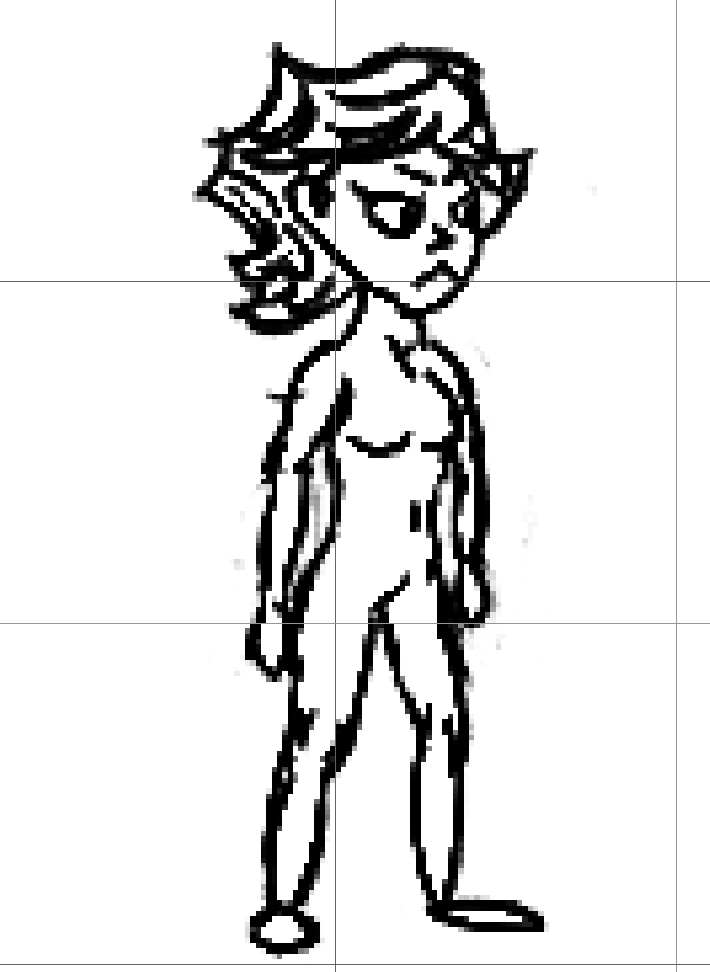
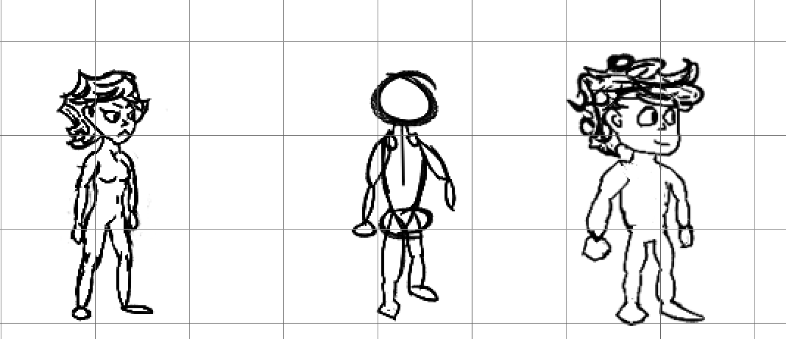
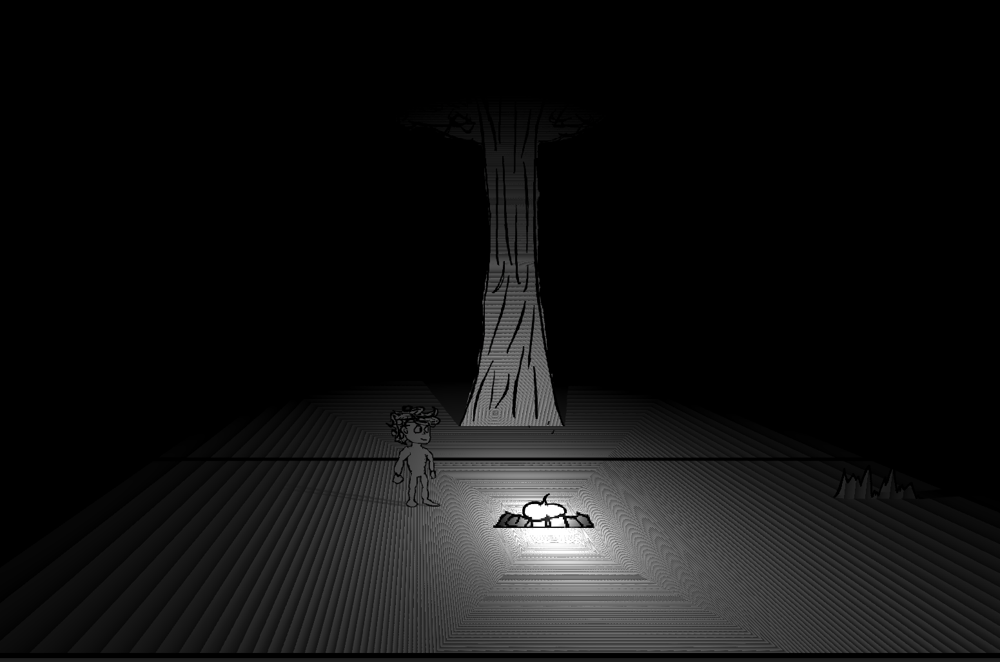
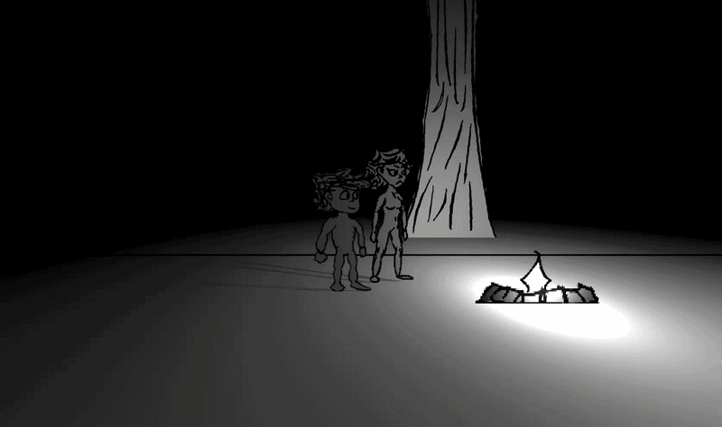

Hi friends. I've done a bit more work since last time and I wanted to share.
I don't have as much to talk about this time, but I still wanted to post something as I feel I've made some progress. So, what have I done? Well, a few things.
Probably the biggest thing is I've started streaming on Twitch! It's great for doing this type of work, because once you start streaming it's more of an obligation to do creative work you might otherwise put off (I know I've struggled with that a lot). And honestly, having the entire creative process recorded is kind of fun. Having those moments of decisions and creation and problem solving, as well as any other spur of the moment things, being captured, is really amazing. I did my second stream today, but I feel like so much has already happened. But, I know that the Vods won't last forever, so I'm even thinking about making my own youtube channel to upload my streams. But well, I don't feel like right now is the time for that.
Now, onto the actual game stuff. First off, I've created a new character. Everyone, say hello to Regina!

I'm quite proud of her design, though it does still feel a bit awkward. Eh, I think it's just the idle pose she's in. I really don't know why I picked that weird arms out pose to be the default idle one for her and Jay, but I suppose it isn't doing any harm.

I also animated a campfire, taking the first step to making a little camp for the player! I really love this animation. My friend was showing me rigged animation earlier today, but honestly? It just doesn't compare to hand drawn. Atleast not in my eyes.
#And finally, the reason I'm up at 4 in the morning making this blog post is because of the final big thing I added - lighting. "It'll be easy", I said. "Just some shadows and some lights, what can go wrong?". Turns out, 2D sprites don't exactly get along with 3D lights.

For some reason Jay's legs kept not showing up in the shadow and there would be weird lines and distortion and stuff and if he walked in front of the campfire, he would just go black like he wasn't being illuminated at all! Which I guess makes sense from a realistic standpoint, and I honestly ended up liking this enough that I think I might keep it over having him be lit from the front and the back :p
But yeah. Lot of time spent, but honestly? The end result looks super nice. I think well worth it. The world is starting to feel cozy and alive. Just wait until I give Regina some animations and personality LOL

That's all from me for tonight, friends. Hope you enjoyed the read and see you in the next one :)